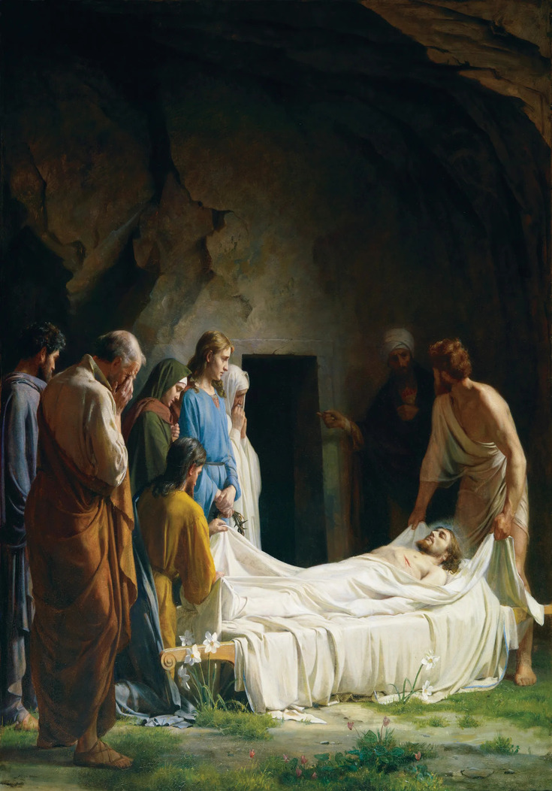

The Only One Gospel
Lord Jesus Christ died for our sins. Then He was buried and that He rose again the third day.
(1 Corinthians 15:3-4)
-
I. Lord Jesus Christ died for out sins.
-

II. Lord Jesus Christ was buried.
-
III. Lord Jesus Christ Rose From The Death
Paul warned in Galatians 1:6-12 that be careful anyone preach wrong Gospel:
"I marvel that ye are so soon removed from him that called you into the grace of Chrst unto another gospel:
Which is not another; but there be some that trouble you, and would pervert the gospel of Christ.
But though we, or an angel from heaven, preach any other gospel unto you than that which we have preached unto you, let him be accursed.
As we said before, so say I now again, if any man preach any other gospel unto you than that ye have received, let him be accursed.
For do I now persuade men, or God? or do I seek to please men? for if I yet pleased men, I should not be the servant of Christ.
But I certify you, brethren, that the gospel which was preached of me is not after man.
For I neither received it of man, neither was I taught it, but by the revelation of Jesus Christ."
Galatians 1:6-12
Believe in Lord Jesus Christ, who offered His life as a sacrifice for our sins and rose again on the third day so that we too may rise again to live in the everlasting life.
Accept Lord Jesus Christ as Lord and Savior to be saved.